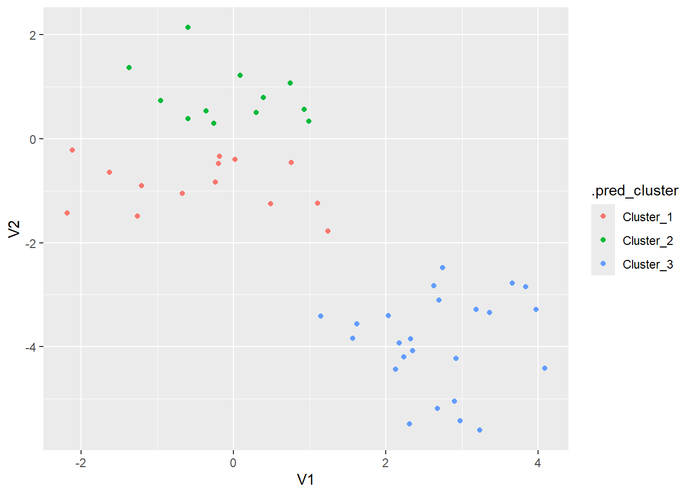
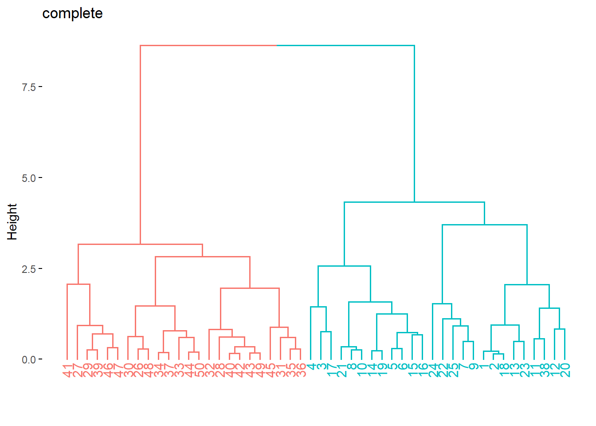

11 聚类
Code

聚类分析的一般步骤
选择合适的变量
缩放数据 ：标准化
寻找异常点
计算距离： dist(x,method = ) 默认欧几里得距离
选择聚类方法和算法
确定类的数目
获得最终的聚类解决方案
结果可视化
解读类
验证结果
11.1 划分聚类 partitioning clustering
11.1.1 K Means Cluster Specification
num_clusters = 3指定中心点（centroids）即类的个数，nstart = 20指定初始位置的个数，希望找到全局最大值而不是局部最大值
Code
kmeans_spec <-tidyclust::k_means(num_clusters = 3) %>%
set_mode("partition") %>%
set_engine("stats") %>%
set_args(nstart = 20)
kmeans_spec
#> K Means Cluster Specification (partition)
#>
#> Main Arguments:
#> num_clusters = 3
#>
#> Engine-Specific Arguments:
#> nstart = 20
#>
#> Computational engine: statsK-means algorithm starts with random initialization
Code
set.seed(100)
kmeans_fit <- kmeans_spec %>%
fit(~., data = x_df)
kmeans_fit$fit
#> K-means clustering with 3 clusters of sizes 14, 12, 24
#>
#> Cluster means:
#> V1 V2
#> 2 -0.4354713 -0.8929796
#> 1 -0.0594887 0.8269786
#> 3 2.6977371 -3.9171729
#>
#> Clustering vector:
#> 1 2 3 4 5 6 7 8 9 10 11 12 13 14 15 16 17 18 19 20 21 22 23 24 25 26
#> 1 1 2 2 2 2 1 2 1 2 1 1 1 2 2 2 2 1 2 1 2 1 1 1 1 3
#> 27 28 29 30 31 32 33 34 35 36 37 38 39 40 41 42 43 44 45 46 47 48 49 50
#> 3 3 3 3 3 3 3 3 3 3 3 1 3 3 3 3 3 3 3 3 3 3 3 3
#>
#> Within cluster sum of squares by cluster:
#> [1] 19.593523 9.502891 32.730828
#> (between_SS / total_SS = 83.4 %)
#>
#> Available components:
#>
#> [1] "cluster" "centers" "totss" "withinss" "tot.withinss"
#> [6] "betweenss" "size" "iter" "ifault"
extract_centroids(kmeans_fit)| .cluster | V1 | V2 |
|---|---|---|
| Cluster_1 | -0.4354713 | -0.8929796 |
| Cluster_2 | -0.0594887 | 0.8269786 |
| Cluster_3 | 2.6977371 | -3.9171729 |
Code
kmeans_fit$fit$centers
#> V1 V2
#> 2 -0.4354713 -0.8929796
#> 1 -0.0594887 0.8269786
#> 3 2.6977371 -3.9171729
kmeans_fit$fit$cluster
#> 1 2 3 4 5 6 7 8 9 10 11 12 13 14 15 16 17 18 19 20 21 22 23 24 25 26
#> 1 1 2 2 2 2 1 2 1 2 1 1 1 2 2 2 2 1 2 1 2 1 1 1 1 3
#> 27 28 29 30 31 32 33 34 35 36 37 38 39 40 41 42 43 44 45 46 47 48 49 50
#> 3 3 3 3 3 3 3 3 3 3 3 1 3 3 3 3 3 3 3 3 3 3 3 3Code
predict(kmeans_fit, new_data = x_df)| .pred_cluster |
|---|
| Cluster_1 |
| Cluster_1 |
| Cluster_2 |
| Cluster_2 |
| Cluster_2 |
| Cluster_2 |
| Cluster_1 |
| Cluster_2 |
| Cluster_1 |
| Cluster_2 |
| Cluster_1 |
| Cluster_1 |
| Cluster_1 |
| Cluster_2 |
| Cluster_2 |
| Cluster_2 |
| Cluster_2 |
| Cluster_1 |
| Cluster_2 |
| Cluster_1 |
| Cluster_2 |
| Cluster_1 |
| Cluster_1 |
| Cluster_1 |
| Cluster_1 |
| Cluster_3 |
| Cluster_3 |
| Cluster_3 |
| Cluster_3 |
| Cluster_3 |
| Cluster_3 |
| Cluster_3 |
| Cluster_3 |
| Cluster_3 |
| Cluster_3 |
| Cluster_3 |
| Cluster_3 |
| Cluster_1 |
| Cluster_3 |
| Cluster_3 |
| Cluster_3 |
| Cluster_3 |
| Cluster_3 |
| Cluster_3 |
| Cluster_3 |
| Cluster_3 |
| Cluster_3 |
| Cluster_3 |
| Cluster_3 |
| Cluster_3 |
Code
augment(kmeans_fit, new_data = x_df)| V1 | V2 | .pred_cluster |
|---|---|---|
| 0.0187462 | -0.4006375 | Cluster_1 |
| -0.1842525 | -0.3345566 | Cluster_1 |
| -1.3713305 | 1.3679540 | Cluster_2 |
| -0.5991677 | 2.1377671 | Cluster_2 |
| 0.2945451 | 0.5058193 | Cluster_2 |
| 0.3897943 | 0.7863424 | Cluster_2 |
| -1.2080762 | -0.9022119 | Cluster_1 |
| -0.3636760 | 0.5328970 | Cluster_2 |
| -1.6266727 | -0.6458943 | Cluster_1 |
| -0.2564784 | 0.2909875 | Cluster_2 |
| 1.1017795 | -1.2375945 | Cluster_1 |
| 0.7557815 | -0.4561763 | Cluster_1 |
| -0.2382336 | -0.8303227 | Cluster_1 |
| 0.9874447 | 0.3401156 | Cluster_2 |
| 0.7413901 | 1.0663764 | Cluster_2 |
| 0.0893473 | 1.2161258 | Cluster_2 |
| -0.9549439 | 0.7356907 | Cluster_2 |
| -0.1951504 | -0.4812086 | Cluster_1 |
| 0.9255213 | 0.5627448 | Cluster_2 |
| 0.4829785 | -1.2463197 | Cluster_1 |
| -0.5963106 | 0.3809222 | Cluster_2 |
| -2.1852868 | -1.4304273 | Cluster_1 |
| -0.6748659 | -1.0484455 | Cluster_1 |
| -2.1190612 | -0.2185036 | Cluster_1 |
| -1.2651980 | -1.4899362 | Cluster_1 |
| 2.6263384 | -2.8272937 | Cluster_3 |
| 2.3124446 | -5.4798270 | Cluster_3 |
| 2.1278412 | -4.4303878 | Cluster_3 |
| 2.8982390 | -5.0516386 | Cluster_3 |
| 2.7462195 | -2.4774137 | Cluster_3 |
| 1.1462595 | -3.4071719 | Cluster_3 |
| 2.9220539 | -4.2226615 | Cluster_3 |
| 3.9685663 | -3.2871057 | Cluster_3 |
| 3.1849260 | -3.2833992 | Cluster_3 |
| 1.6200564 | -3.5597581 | Cluster_3 |
| 1.5644856 | -3.8411694 | Cluster_3 |
| 3.3620872 | -3.3402359 | Cluster_3 |
| 1.2409132 | -1.7794803 | Cluster_1 |
| 2.6754560 | -5.1839451 | Cluster_3 |
| 2.3484370 | -4.0739558 | Cluster_3 |
| 4.0865514 | -4.4163547 | Cluster_3 |
| 2.2374551 | -4.1914823 | Cluster_3 |
| 2.1713375 | -3.9304552 | Cluster_3 |
| 3.8344739 | -2.8446517 | Cluster_3 |
| 2.0323480 | -3.4050427 | Cluster_3 |
| 2.9711847 | -5.4196451 | Cluster_3 |
| 3.2325252 | -5.6066772 | Cluster_3 |
| 2.6987913 | -3.1070741 | Cluster_3 |
| 2.3223854 | -3.8518320 | Cluster_3 |
| 3.6552276 | -2.7729716 | Cluster_3 |
Code

tune_cluster()找到最适合的类的数目
Code
set.seed(1000)
x_boots <- bootstraps(x_df, times = 10)
num_clusters_grid <- tibble(num_clusters = seq(1, 10))
tune_res <- tune_cluster(
object = kmeans_wf,
resamples = x_boots,
grid = num_clusters_grid
)Code
tune_res %>%
collect_metrics()| num_clusters | .metric | .estimator | mean | n | std_err | .config |
|---|---|---|---|---|---|---|
| 1 | sse_total | standard | 380.786777 | 10 | 10.4447386 | Preprocessor1_Model01 |
| 1 | sse_within_total | standard | 380.786777 | 10 | 10.4447386 | Preprocessor1_Model01 |
| 2 | sse_total | standard | 380.786777 | 10 | 10.4447386 | Preprocessor1_Model02 |
| 2 | sse_within_total | standard | 81.383286 | 10 | 4.3641684 | Preprocessor1_Model02 |
| 3 | sse_total | standard | 380.786777 | 10 | 10.4447386 | Preprocessor1_Model03 |
| 3 | sse_within_total | standard | 56.802731 | 10 | 3.3426467 | Preprocessor1_Model03 |
| 4 | sse_total | standard | 380.786777 | 10 | 10.4447386 | Preprocessor1_Model04 |
| 4 | sse_within_total | standard | 40.545559 | 10 | 2.3276203 | Preprocessor1_Model04 |
| 5 | sse_total | standard | 380.786777 | 10 | 10.4447386 | Preprocessor1_Model05 |
| 5 | sse_within_total | standard | 29.768319 | 10 | 1.7066577 | Preprocessor1_Model05 |
| 6 | sse_total | standard | 380.786777 | 10 | 10.4447386 | Preprocessor1_Model06 |
| 6 | sse_within_total | standard | 21.819381 | 10 | 1.4251099 | Preprocessor1_Model06 |
| 7 | sse_total | standard | 380.786777 | 10 | 10.4447386 | Preprocessor1_Model07 |
| 7 | sse_within_total | standard | 17.036419 | 10 | 1.0408734 | Preprocessor1_Model07 |
| 8 | sse_total | standard | 380.786777 | 10 | 10.4447386 | Preprocessor1_Model08 |
| 8 | sse_within_total | standard | 13.631892 | 10 | 0.8423566 | Preprocessor1_Model08 |
| 9 | sse_total | standard | 380.786777 | 10 | 10.4447386 | Preprocessor1_Model09 |
| 9 | sse_within_total | standard | 10.956988 | 10 | 0.6690897 | Preprocessor1_Model09 |
| 10 | sse_total | standard | 380.786777 | 10 | 10.4447386 | Preprocessor1_Model10 |
| 10 | sse_within_total | standard | 8.823481 | 10 | 0.5945123 | Preprocessor1_Model10 |
elbow method 找到最理想的类的个数。
Code
tune_res %>%
autoplot()
调整后的聚类
11.2 分层聚类(小样本)Hierarchical Clustering
算法
定义每个观测为一类
计算每类与其他各类的距离
把距离最短的两类合并成新的一类,总的类的个数减一
重复2,3步骤,直到所有的类聚成单个类为止
11.2.1 hclust specification
Code
res_hclust_complete <- tidyclust::hier_clust(linkage_method = "complete") %>%
fit(~., data = x_df)
res_hclust_average <- hier_clust(linkage_method = "average") %>%
fit(~., data = x_df)
res_hclust_single <- hier_clust(linkage_method = "single") %>%
fit(~., data = x_df)factoextra package 提取模型信息和可视化
Code
library(factoextra)
res_hclust_complete %>%
extract_fit_engine() %>%
fviz_dend(main = "complete", k = 2)
Code
res_hclust_average %>%
extract_fit_engine() %>%
fviz_dend(main = "average", k = 2)
Code
res_hclust_single %>%
extract_fit_engine() %>%
fviz_dend(main = "single", k = 2)
Code
hier_rec <- recipe(~., data = x_df) %>%
step_normalize(all_numeric_predictors()) # 标准化
hier_wf <- workflow() %>%
add_recipe(hier_rec) %>%
add_model(hier_clust(linkage_method = "complete"))
hier_fit <- hier_wf %>%
fit(data = x_df)
hier_fit %>%
extract_fit_engine() %>%
fviz_dend(k = 2)